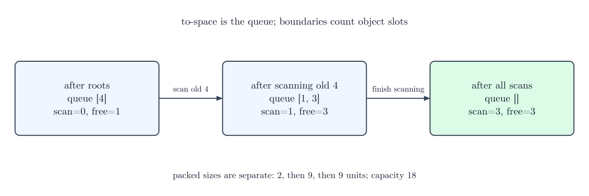
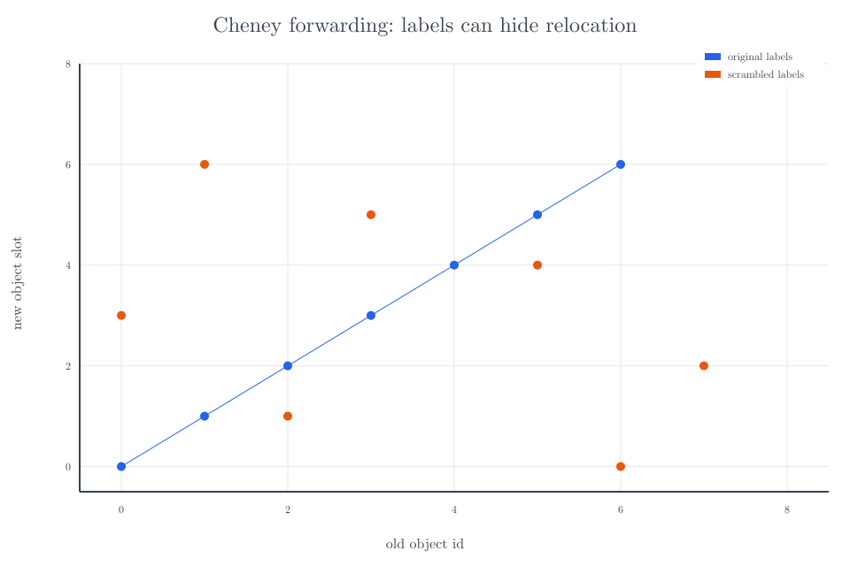
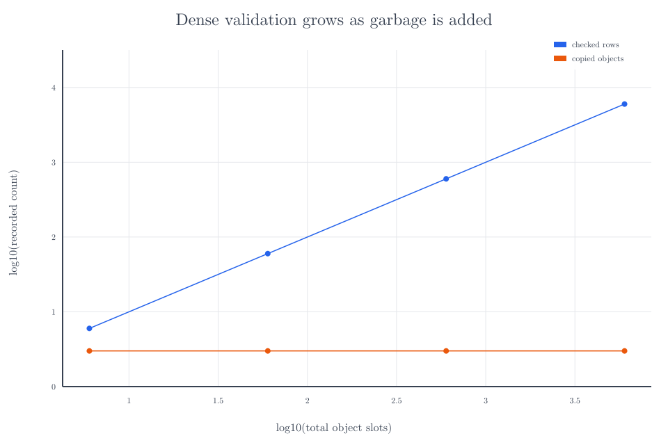

Cheney Copying: The To-Space Queue and Every Rewritten Reference
Abstract
Moving live objects requires finding them, preserving shared targets and cycles, and updating every live reference to its new destination. Cheney-style copying uses the growing destination itself as a queue: a scan head follows the free boundary until all discovered objects have been processed. We inspect a small cyclic graph, retain the original tree example, and show why its identity forwarding map hides actual relocation. Canonical C++ now constructs a rewritten symbolic heap, packs variable-sized objects, checks destination capacity, and records actual forwarding and scan events. Whole-input validation and a dense forwarding table make this model's costs different from an in-place runtime collector's live-data-only description.
A three-object live cycle, copied only once
Use six old objects. Roots [4,4] deliberately repeat the same target. Object 4 references [1,3], object 1 references [3], and object 3 references [4]. Thus 3 is shared and 4 closes a cycle. The disconnected cycle 0→2→0 and isolated object 5 are garbage. Sizes [2,3,1,4,2,5] are integral model units; the old objects occupy 17 units, while the live sizes 2+3+4 occupy nine. A target capacity of 18 can hold them all.
The first root copies old 4 to new slot 0. The second root reuses that slot. Scanning old 4 discovers old 1 and old 3, giving order [4,1,3]. Later references reuse installed forwarding slots. The pending queue consists of old ids in the already-copied order, between the scan and free boundaries.
#include <dm/dm.hpp>
int main() {
std::filesystem::create_directories("build");
const dm::algorithms::ObjectGraph graph{6,{{2},{3},{0},{4},{1,3},{}},{4,4},{2,3,1,4,2,5}};
const auto trace=dm::algorithms::cheney_copy_trace(graph,18);
const auto first_scan=std::find_if(trace.events.begin(),trace.events.end(),[](const auto& e){return e.phase==dm::algorithms::CheneyPhase::Scan;});
const std::array<const dm::algorithms::CheneyEvent*,3> frames{
&trace.events[trace.copy.work.root_probes-1],&*first_scan,&trace.events.back()};
const std::array<std::string,3> labels{"after roots","after scanning old 4","after all scans"};
std::print("| checkpoint | scan slot | free slot | packed units | pending old ids |\n| :--- | ---: | ---: | ---: | :--- |\n");
dm::graphics::Diagram diagram(55,1100);
dm::graphics::DiagramNodeStyle node;node.width=5.2;node.height=2.7;node.font_size=20;
for(std::size_t i=0;i<frames.size();++i) {
const auto& e=*frames[i];const auto head=e.phase==dm::algorithms::CheneyPhase::Scan?e.scan+1:e.scan;
const std::vector<int> pending(trace.copy.relocation.to_space_order.begin()+head,
trace.copy.relocation.to_space_order.begin()+e.free_after);
std::print("| {} | {} | {} | {} | {} |\n",labels[i],head,e.free_after,e.used_after,pending);
if(i==2)node.fill={220,252,231};
const auto id=std::format("frame{}",i);
diagram.node(id,{7.5*i,0},std::format("{}\nqueue {}\nscan={}, free={}",labels[i],pending,head,e.free_after),node);
if(i)diagram.edge(std::format("frame{}",i-1),id,i==1?"scan old 4":"finish scanning");
}
diagram.text({7.5,2.8},"to-space is the queue; boundaries count object slots",20)
.text({7.5,-2.8},"packed sizes are separate: 2, then 9, then 9 units; capacity 18",18)
.save_svg("build/cheney_method.svg");
}| checkpoint | scan slot | free slot | packed units | pending old ids |
|---|---|---|---|---|
| after roots | 0 | 1 | 2 | [4] |
| after scanning old 4 | 1 | 3 | 9 | [1, 3] |
| after all scans | 3 | 3 | 9 | [] |

At all times 0≤scan≤free≤N. Slots [0,scan) have been fully scanned; [scan,free) is the pending queue; unforwarded old ids remain undiscovered. A forward request either appends one first copy or reuses an existing slot. Installing forwarding before scanning that copy ensures that self references, shared targets and cycles cannot create duplicate copies. Every scan advances the head once, and at most N objects can be appended, so the finite graph traversal terminates without a recursive stack or a separate traversal queue.
A copied object is reachable because it was a root or the target of a live field. Conversely, if a reachable object were missing at termination, take the first missing object on a root-to-object path. Its copied predecessor would have been scanned and would have forwarded it: a contradiction. Thus the copied set is exactly the root-reachable set.
Inspect actual forwards, rewritten fields and packed offsets
Object slots and size offsets are different quantities. Old 3 becomes new slot 2, whose packed offset is 5. It does not move to byte address 2. The API preserves every root/reference slot, including duplicates; sizes are positive units selected by the caller, with no alignment or header padding.
#include <dm/dm.hpp>
int main() {
const dm::algorithms::ObjectGraph graph{6,{{2},{3},{0},{4},{1,3},{}},{4,4},{2,3,1,4,2,5}};
const auto trace=dm::algorithms::cheney_copy_trace(graph,18);const auto& copy=trace.copy;
std::print("| source slot | old target | new slot | action | free before | free after |\n| :--- | ---: | ---: | :--- | ---: | ---: |\n");
for(const auto& e:trace.events) {
if(e.phase==dm::algorithms::CheneyPhase::Scan)continue;
const auto source=e.phase==dm::algorithms::CheneyPhase::Root?std::format("root[{}]",e.field):std::format("old {} field {}",e.source,e.field);
std::print("| {} | {} | {} | {} | {} | {} |\n",source,e.target,e.destination,e.copied?"copy":"reuse",e.free_before,e.free_after);
}
std::print("\n| new slot | old id | packed offset | size units | rewritten references |\n| ---: | ---: | ---: | ---: | :--- |\n");
for(std::size_t slot=0;slot<copy.relocation.to_space_order.size();++slot)
std::print("| {} | {} | {} | {} | {} |\n",slot,copy.relocation.to_space_order[slot],copy.offsets[slot],copy.heap.sizes[slot],copy.heap.refs[slot]);
std::print("\nRewritten roots: {}. Dense old-to-new slots: {}.\n",copy.heap.roots,copy.relocation.forwarding);
std::print("Copies: {}; reuses: {}; completed scans: {}; packed units: {}.\n",copy.work.copies,copy.work.reuses,copy.work.scans,copy.used_units);
const auto again=dm::algorithms::cheney_evacuate(copy.heap,9);
std::print("A second evacuation preserves the rewritten graph: {}.\n",again.heap.refs==copy.heap.refs && again.heap.roots==copy.heap.roots);
}| source slot | old target | new slot | action | free before | free after |
|---|---|---|---|---|---|
| root[0] | 4 | 0 | copy | 0 | 1 |
| root[1] | 4 | 0 | reuse | 1 | 1 |
| old 4 field 0 | 1 | 1 | copy | 1 | 2 |
| old 4 field 1 | 3 | 2 | copy | 2 | 3 |
| old 1 field 0 | 3 | 2 | reuse | 3 | 3 |
| old 3 field 0 | 4 | 0 | reuse | 3 | 3 |
| new slot | old id | packed offset | size units | rewritten references |
|---|---|---|---|---|
| 0 | 4 | 0 | 2 | [1, 2] |
| 1 | 1 | 2 | 3 | [2] |
| 2 | 3 | 5 | 4 | [0] |
Rewritten roots: [0, 0]. Dense old-to-new slots: [-1, 1, -1, 2, 0, -1]. Copies: 3; reuses: 3; completed scans: 3; packed units: 9. A second evacuation preserves the rewritten graph: true.
The new roots are [0,0], and the new reference rows are [1,2], [2], [0]. Both references to old 3 converge on new slot 2; the cycle points back to new slot 0. An already-forwarded object must be reused, rather than copied again. For this graph, two root probes plus four live-field probes yield three copies and three reuses. Each copied object is scanned exactly once.
If survivors have sizes s0 through s(L−1) in copy order, packing obeys
These offsets have no holes under the declared integral-unit model. Real alignment and object headers can add padding; locality and runtime performance are not measured here. This API returns graph metadata, without copying actual C++ payload bytes, reclaiming an arena, suspending mutators or implementing write barriers. In a real equal-semispace setup, each side reserves C units; both the old occupied heap and all survivors must fit their respective side. The API's capacity argument constrains the destination only.
Retain the original tree and make relocation visible
The original nine-object graph contains a live seven-node binary tree rooted at 0 and garbage 7→8. Its breadth-first order [0,1,2,3,4,5,6] equals its old labels, so its plot is an identity map. Keep it, and add the same tree with live labels [6,2,7,0,5,3,1]. The changed map makes first-discovery relocation visible; it does not imply different liveness or a faster collector.
#include <dm/dm.hpp>
int main() {
std::filesystem::create_directories("build");
const dm::algorithms::ObjectGraph original{9,{{1,2},{3,4},{5,6},{},{},{},{},{8},{}},{0},{}};
const dm::algorithms::ObjectGraph scrambled{9,{{},{},{0,5},{},{8},{},{2,7},{3,1},{}},{6},{}};
const std::array graphs{original,scrambled};
const std::array<std::string,2> names{"original labels","scrambled labels"};
const std::array<dm::graphics::RGB,2> colours{{{37,99,235},{234,88,12}}};
auto plot=dm::graphics::RPlot::create();
std::print("| input | actual copy order | live objects | garbage objects |\n| :--- | :--- | ---: | ---: |\n");
for(std::size_t i=0;i<graphs.size();++i) {
const auto result=dm::algorithms::cheney_copy(graphs[i]);
std::print("| {} | {} | {} | {} |\n",names[i],result.to_space_order,result.to_space_order.size(),graphs[i].num_objects-result.to_space_order.size());
std::vector<double> old_ids,new_slots;
for(int old=0;old<graphs[i].num_objects;++old)if(result.forwarding[old]>=0) {
old_ids.push_back(old);new_slots.push_back(result.forwarding[old]);
}
if(i==0)plot.line(old_ids,new_slots,names[i],colours[i],1);
plot.points(old_ids,new_slots,names[i],colours[i],5);
}
plot.legend({"original labels","scrambled labels"},{{37,99,235},{234,88,12}})
.title("Cheney forwarding: labels can hide relocation")
.x_label("old object id").y_label("new object slot").x_limits(-0.5,8.5).y_limits(-0.5,8)
.save_svg("build/cheney.svg");
}| input | actual copy order | live objects | garbage objects |
|---|---|---|---|
| original labels | [0, 1, 2, 3, 4, 5, 6] | 7 | 2 |
| scrambled labels | [6, 2, 7, 0, 5, 3, 1] | 7 | 2 |

Copy order follows the root order and then each scanned object's field order. It is not sorted by old id. Multiple roots enter before child scanning starts; changing root or field order can change forwarding slots while preserving the live set. The forwarding map has one entry for every old id, including garbage, where it stores −1. It is a side table, rather than a forwarding word written into an old object's header.
Separate live copying from whole-input checks
An ideal runtime copying pass can avoid scanning garbage payloads, using old headers for forwarding and to-space for its queue. The present checked graph model first validates every adjacency row and stored id, including garbage, and initialises N forwarding entries. It therefore does not have O(L) total work or O(1) auxiliary storage beyond physical semispaces.
The next program keeps the same three live objects and four live fields while adding isolated unreachable objects. Only positive recorded counts are log10- transformed for the plot; the table contains the original integer counts.
#include <dm/dm.hpp>
int main() {
std::filesystem::create_directories("build");
const dm::algorithms::ObjectGraph base{6,{{2},{3},{0},{4},{1,3},{}},{4,4},{}};
std::vector<double> log_n,log_validation,log_copies;
std::print("| object slots N | checked rows | checked fields | copied objects | live-field probes | forwarding entries |\n| ---: | ---: | ---: | ---: | ---: | ---: |\n");
for(const int N:{6,60,600,6000}) {
auto graph=base;graph.num_objects=N;graph.refs.resize(N);
const auto copy=dm::algorithms::cheney_evacuate(graph);
std::print("| {} | {} | {} | {} | {} | {} |\n",N,copy.work.validation.rows,copy.work.validation.references,
copy.work.copies,copy.work.reference_probes,copy.relocation.forwarding.size());
log_n.push_back(std::log10(static_cast<double>(N)));
log_validation.push_back(std::log10(static_cast<double>(copy.work.validation.rows)));
log_copies.push_back(std::log10(static_cast<double>(copy.work.copies)));
}
auto plot=dm::graphics::RPlot::create();
plot.line(log_n,log_validation,"validation",{37,99,235},1.5).points(log_n,log_validation,"validation",{37,99,235},4)
.line(log_n,log_copies,"copies",{234,88,12},1.5).points(log_n,log_copies,"copies",{234,88,12},4)
.legend({"checked rows","copied objects"},{{37,99,235},{234,88,12}})
.title("Dense validation grows as garbage is added")
.x_label("log10(total object slots)").y_label("log10(recorded count)").y_limits(0,4.5)
.save_svg("build/cheney_work.svg");
}| object slots N | checked rows | checked fields | copied objects | live-field probes | forwarding entries |
|---|---|---|---|---|---|
| 6 | 6 | 6 | 3 | 4 | 6 |
| 60 | 60 | 6 | 3 | 4 | 60 |
| 600 | 600 | 6 | 3 | 4 | 600 |
| 6000 | 6000 | 6 | 3 | 4 | 6000 |

For N objects, E stored fields, R root slots, L live objects and E_live live fields, this implementation validates O(N+E+R) input and initialises O(N) forwarding entries. Its evacuation work is O(R+L+E_live), with each live field examined even if it points to an already-forwarded target. Total work remains O(N+E+R). The rewritten graph owns O(L+E_live+R) metadata, the forwarding map owns O(N), and tracing adds exactly R+E_live+L event records. The growing copy-order vector replaces a separate traversal queue, but does not remove these other allocations. Counts are not measurements of elapsed time or bytes moved. No observational dataset is needed for these controlled graph invariants.
Capacity, malformed garbage and whole-call trace limits
#include <dm/dm.hpp>
int main() {
const dm::algorithms::ObjectGraph graph{6,{{2},{3},{0},{4},{1,3},{}},{4,4},{2,3,1,4,2,5}};
const auto exact=dm::algorithms::cheney_copy_trace(graph,9,9);
bool capacity=false,budget=false,garbage=false;
try {(void)dm::algorithms::cheney_evacuate(graph,8);}catch(const std::length_error&){capacity=true;}
try {(void)dm::algorithms::cheney_copy_trace(graph,9,8);}catch(const std::length_error&){budget=true;}
auto invalid=graph;invalid.refs[0]={6};
try {(void)dm::algorithms::cheney_copy(invalid);}catch(const std::invalid_argument&){garbage=true;}
const auto empty=dm::algorithms::cheney_copy_trace(dm::algorithms::ObjectGraph{},0,1);
const dm::algorithms::ObjectGraph prefix{3,{{1},{2},{}},{0},{7}};
const auto defaults=dm::algorithms::cheney_evacuate(prefix,9);
if(!capacity || !budget || !garbage || exact.copy.used_units!=9)return 1;
std::print("Exact target capacity 9 and event cap 9 succeed: {} packed units, {} records.\n",exact.copy.used_units,exact.events.size());
std::print("Capacity 8 rejected: {}; event cap 8 rejected: {}; dangling field in unreachable old 0 rejected: {}.\n",capacity,budget,garbage);
std::print("Default empty graph at zero capacity: {} objects, {} events.\n",empty.copy.heap.num_objects,empty.events.size());
std::print("Partial sizes [7] become {}; packed offsets {}.\n",defaults.heap.sizes,defaults.offsets);
std::print("Original roots and old-4 fields remain {} and {}.\n",graph.roots,graph.refs[4]);
}Exact target capacity 9 and event cap 9 succeed: 9 packed units, 9 records. Capacity 8 rejected: true; event cap 8 rejected: true; dangling field in unreachable old 0 rejected: true. Default empty graph at zero capacity: 0 objects, 0 events. Partial sizes [7] become [7, 1, 1]; packed offsets [0, 7, 8]. Original roots and old-4 fields remain [4, 4] and [1, 3].
Capacity is a strict destination-unit limit, so equality succeeds and zero allows no live objects. A positive event cap counts all root, live-field and completed-scan records; zero means no explicit event cap. Failed calls return no partial heap or trace and leave the input unchanged. Duplicate root and field slots still count as requests even when they reuse an object. Negative or out-of-range ids are rejected, including unreachable fields. Empty roots produce an empty copy but do not bypass structural validation.
The old cheney_copy() API keeps its two-vector result and ignores size metadata; it still only returns order and slot forwarding. The new evacuation and trace APIs validate the complete positive size prefix and return rewritten roots, references and offsets. Neither API is a production managed-memory collector. The graph model omits payloads, alignment, weak references, finalisers, concurrency and generational barriers; those omissions cannot establish a locality improvement, pause bound or automatic suitability for a nursery.
Native tests compare 6,775 exhaustive small graph/ordered-root configurations against an independent queue oracle and transitive closure. A further 1,000 random multigraphs check every rewritten slot, size and actual event. Cycles, sharing, duplicate fields/roots, ordering, exact capacities and event caps, malformed unreachable fields, owned copies and repeated evacuation are checked. A 100,000-object chain verifies iterative depth handling; a 50,000-object frontier exercises growing output buffers while a source object is scanned. AddressSanitizer and UBSan run these new cases alongside ordinary native tests; the existing collector and formatting cases remain regressions.
References
- C. J. Cheney (1970). [A Nonrecursive List Compacting Algorithm](https://doi.org/10.1145/362790.362798), Communications of the ACM 13(11), 677–678. [Author's paper, university-hosted copy](https://people.cs.umass.edu/~emery/classes/cmpsci691s-fall2004/papers/p677-cheney.pdf). The original list-cell representation differs from this generic graph model, which uses a side forwarding table and symbolic sizes.